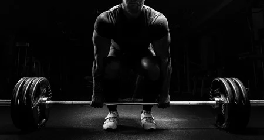

Welcome To Elite Physique
Where Working Out And Nutrition Go Hand In Hand


Chest exercises: Incline barbell bench press, Flat barbell bench press, Decline barbell bench press, Incline dumbbell bench press, Cable chest fly. Leg Exercises: Barbell back squats, Barbell front squats, Barbell lunges, Barbell Bulgarian split squats. Arm Exercises: Barbell bicep curl, E-Z bar bicep curls, Barbell preacher curls.